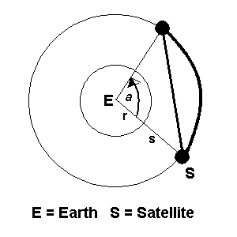

|
Satellites |
The radius of earth is 6440 Kilometer. There are many Satellites and Asteroids moving around the earth. If two Satellites create an angle with the center of earth, can you find out the distance between them? By distance we mean both the arc and chord distances. Both satellites are on the same orbit. (However, please consider that they are revolving on a circular path rather than an elliptical path.)

The input file will contain one or more test cases.
Each test case consists of one line containing two-integer s and a and a string "min" or "deg". Here s is the distance of the satellite from the surface of the earth and a is the angle that the satellites make with the center of earth. It may be in minutes ( ‘ ) or in degrees ( 0 ). Remember that the same line will never contain minute and degree at a time.
For each test case, print one line containing the required distances i.e. both arc distance and chord distance respectively between two satellites in Kilometer. The distance will be a floating-point value with six digits after decimal point.
500 30 deg 700 60 min 200 45 deg
3633.775503 3592.408346 124.616509 124.614927 5215.043805 5082.035982
--------------------------------------------------------------------------------------------------------------------
Ahmed Shamsul Arefin